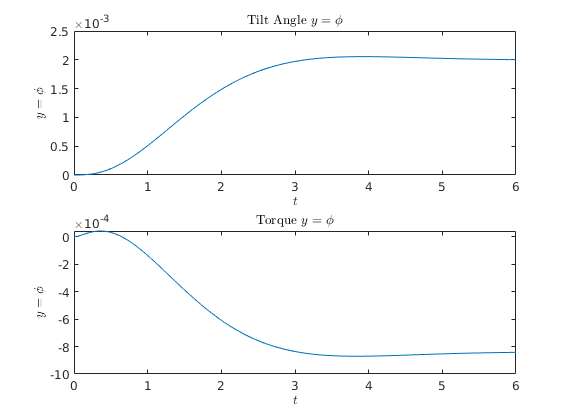

Contents
clear;
Given:
Basic data is given by 26 parameters
g = 9.81;
b = 1.00;
c = 0.08;
Rrw = 0.35; Rfw = 0.35;
lambda = pi*70/180;
mrf=12;xrf=0.439;zrf=0.579;
Jxxrf=0.475656;Jxzrf=0.273996;Jyyrf=1.033092;Jzzrf=0.527436;
mrf=87;xrf=0.491586;zrf=1.028138;
Jxxrf=3.283666;Jxzrf=0.602765;Jyyrf=3.8795952;Jzzrf=0.565929;
mff=2;xff=0.866;zff=0.676;
Jxxff=0.08;Jxzff=-0.02;Jyyff=0.07;Jzzff=0.02;
mrw=1.5;Jxxrw=0.07;Jyyrw=0.14;
mfw=1.5;Jxxfw=0.07;Jyyfw=0.14;
xrw=0;zrw=Rrw;xfw=b;zfw=Rfw;
Jzzrw=Jxxrw;Jzzfw=Jxxfw;
mt=mrf+mrw+mff+mfw;
xt=(mrf*xrf+mrw*xrw+mff*xff+mfw*xfw)/mt;
zt=(mrf*zrf+mrw*zrw+mff*zff+mfw*zfw)/mt;
Jxxt=Jxxrf+mrf*zrf^2+Jxxrw+mrw*zrw^2+Jxxff+mff*zff^2+Jxxfw+mfw*zfw^2;
Jxzt=Jxzrf+mrf*xrf*zrf+mrw*xrw*zrw+Jxzff+mff*xff*zff+mfw*xfw*zfw;
Jzzt=Jzzrf+mrf*xrf^2+Jzzrw+mrw*xrw^2+Jzzff+mff*xff^2+Jzzfw+mfw*xfw^2;
mf=mff+mfw;
xf=(mff*xff+mfw*xfw)/mf;zf=(mff*zff+mfw*zfw)/mf;
Jxxf=Jxxff+mff*(zff-zf)^2+Jxxfw+mfw*(zfw-zf)^2;
Jxzf=Jxzff+mff*(xff-xf)*(zff-zf)+mfw*(xfw-xf)*(zfw-zf);
Jzzf=Jzzff+mff*(xff-xf)^2+Jzzfw+mfw*(xfw-xf)^2;
d=(xf-b-c)*sin(lambda)+zf*cos(lambda);
Fll=mf*d^2+Jxxf*cos(lambda)^2+2*Jxzf*sin(lambda)*cos(lambda)+Jzzf*sin(lambda)^2;
Flx=mf*d*zf+Jxxf*cos(lambda)+Jxzf*sin(lambda);
Flz=mf*d*xf+Jxzf*cos(lambda)+Jzzf*sin(lambda);
gamma=c*sin(lambda)/b;
Sr=Jyyrw/Rrw;Sf=Jyyfw/Rfw;St=Sr+Sf;Su=mf*d+gamma*mt*xt;
M=[Jxxt -Flx-gamma*Jxzt;-Flx-gamma*Jxzt Fll+2*gamma*Flz+gamma^2*Jzzt];
K0=[-mt*g*zt g*Su;g*Su -g*Su*cos(lambda)];
K2=[0 -(St+mt*zt)*sin(lambda)/b;0 (Su+Sf*cos(lambda))*sin(lambda)/b];
c12=gamma*St+Sf*sin(lambda)+Jxzt*sin(lambda)/b+gamma*mt*zt;
c22=Flz*sin(lambda)/b+gamma*(Su+Jzzt*sin(lambda)/b);
C0=[0 -c12;(gamma*St+Sf*sin(lambda)) c22];
one=diag([1 1]);null=zeros(2,2);
v0=5;
A=[null one;-M\(K0+K2*v0^2) -M\(C0*v0)];
bm=M\[0;1];
B=[0;0;bm];
eig(A)';
Compute K for different given eigenvalues
Homework 5.2
2.a
fprintf(['Part 2.a\n'])
A
B
C = [1 0 0 0]
w_o = [C; C*A; C*A^2; C*A^3]
rank(w_o)
Part 2.a
A =
0 0 1.0000 0
0 0 0 1.0000
8.7611 23.2100 -0.6370 2.1486
-14.9477 29.1529 -17.2465 -12.9089
B =
0
0
0.2922
7.9109
C =
1 0 0 0
w_o =
1.0000 0 0 0
0 0 1.0000 0
8.7611 23.2100 -0.6370 2.1486
-37.6977 47.8537 -27.8894 -5.8950
ans =
4
2.b
fprintf(['Part 2.b\n'])
L_eigs = [-4, -20, -2 + 2i, -2 - 2i];
LT = place(A', C', L_eigs);
L = LT'
Part 2.b
L =
14.4541
-75.9787
-19.1590
925.6916
2.c
fprintf(['Part 2.c\n'])
D = 0
K_eigs = [-2, -10, -1+i, -1 - i]
K = place(A, B, K_eigs)
kr = inv(-(C - D*K)*inv(A - B*K)*B + D)
A_t = [A-B*K, B*K; zeros(size(A)), A - L*C]
B_t = [B*kr; zeros(size(B))]
C_t = [C zeros(size(C))]
sys = ss(A_t, B_t, C_t, 0);
opt = stepDataOptions('StepAmplitude',0.002);
[y, t, x] = step(sys, 6, opt);
figure(1); clf;
subplot(2,1,1);
plot(t, y);
title('Tilt Angle $y = \phi$', 'Interpreter', 'latex')
xlabel('$t$', 'Interpreter', 'latex')
ylabel('$y = \phi$', 'Interpreter', 'latex')
e = x(:, 5:8);
x = x(:, 1:4);
x_hat = x + e;
T = -K*x_hat' + kr*0.002;
subplot(2,1,2);
plot(t, x(:,2));
title('Torque $y = \phi$', 'Interpreter', 'latex')
xlabel('$t$', 'Interpreter', 'latex')
ylabel('$y = \phi$', 'Interpreter', 'latex')
saveas(gca, "ES155P5_2_bicycle.jpg")
Part 2.c
D =
0
K_eigs =
-2.0000 + 0.0000i -10.0000 + 0.0000i -1.0000 + 1.0000i -1.0000 - 1.0000i
K =
0.3247 8.4043 -1.3455 0.1071
kr =
0.2284
A_t =
Columns 1 through 7
0 0 1.0000 0 0 0 0
0 0 0 1.0000 0 0 0
8.6662 20.7544 -0.2438 2.1173 0.0949 2.4557 -0.3932
-17.5161 -37.3330 -6.6021 -13.7562 2.5684 66.4859 -10.6444
0 0 0 0 -14.4541 0 1.0000
0 0 0 0 75.9787 0 0
0 0 0 0 27.9201 23.2100 -0.6370
0 0 0 0 -940.6393 29.1529 -17.2465
Column 8
0
0
0.0313
0.8472
0
1.0000
2.1486
-12.9089
B_t =
0
0
0.0668
1.8072
0
0
0
0
C_t =
1 0 0 0 0 0 0 0
